Dans cette vidéo, Jack, artiste VFX publicitaire cumulant plus d'une décennie d'expérience, s'attaque à l'un des problèmes les plus frustrants rencontrés par les créateurs utilisant l'outil d'intelligence artificielle « Nano Banana » (nom de code de la préversion d'image de Gemini 2.5 Flash) : la gestion erratique des formats d'image et le non-respect des prompts textuels. Alors que de nombreux utilisateurs se heurtent à des générations bloquées au format carré (1:1) ruinant leurs velléités de cinéma ou de publicité par IA au format plein cadre (16:9), Jack démontre qu'il ne s'agit pas d'un bug insurmontable, mais d'une question de logique dans l'ordre d'injection des assets visuels.
La méthode étape par étape de Jack repose sur une astuce de contournement fondamentale : le ratio final de l'image est dicté par le **dernier fichier visuel téléchargé** dans le prompt multifichiers. En inversant l'ordre de chargement (par exemple, en soumettant d'abord le logo carré, puis l'image de référence 16:9 en dernier), l'IA se cale automatiquement sur le bon ratio, court-circuitant ainsi sa tendance naturelle à imiter le format de la première image. Cette découverte technique s'accompagne d'une stratégie d'utilisation d'une plateforme tierce gratuite permettant de s'affranchir des contraintes des versions payantes et des filigranes, fluidifiant considérablement le pipeline de production vidéo.
Pour les créateurs de contenu, les réalisateurs et les monteurs publicitaires, ces enseignements transforment un outil perçu comme capricieux en un véritable moteur de production fiable. En éliminant les frictions liées au formatage et en évitant les étapes superflues de nettoyage de filigranes sous Photoshop, le workflow présenté permet de gagner un temps précieux, garantissant des assets visuels directement exploitables pour l'animation et le montage de films générés par IA.
Tout le monde est obsédé par Nano Banana en ce moment, mais pourquoi n'arrivez-vous jamais à faire ce que vous demandez à cet outil d'intelligence artificielle ? Mauvais ratios d'image, générations bizarres, et parfois un Nano Banana qui ignore totalement vos prompts. Je comprends, c'est super frustrant, mais je suis là pour vous aider. Et restez avec moi car dans ce guide ultime, je vais vous transmettre trois conseils essentiels pour le nouvel éditeur d'images de Google. Et le dernier est un petit secret dont je n'entends jamais personne parler.
Interface & Outils : Présentation par le créateur dans des décors générés par IA (sans interface logicielle ni partage d'écran).
Contenu textuel & Code : Texte affiché à l'écran au fil de la narration : "with nano banana", "and sometimes", "ultimate guide", "never hear". Visuels de style cinématographique illustrant le propos (temple mystérieux, tournage sur fond vert avec des techniciens, banane dorée).
Action / Démonstration : Le créateur illustre le propos à travers des scènes narratives générées par IA (exploration d'un temple, tournage en studio avec fond vert) tout en s'exprimant face caméra.
Je suis Jack, je suis artiste VFX dans l'industrie publicitaire depuis plus d'une décennie maintenant, et j'ai travaillé pour nombre des plus grandes marques de la planète. Et honnêtement, c'est l'un des outils les plus passionnants que j'aie vus depuis des années. Mais voilà le problème, Nano Banana ne brille que si vous l'utilisez de la bonne manière. Alors plongeons-nous dedans et je vais vous montrer comment libérer tout son potentiel.
Interface & Outils : Présentation face caméra sans partage d'écran
Contenu textuel & Code : Aucun contenu logiciel ou interface affiché à l'écran, uniquement le créateur parlant face caméra dans son studio.
Action / Démonstration : Jack s'adresse directement au public depuis son studio, gesticulant légèrement pour appuyer ses propos.
Parce que si vous vous intéressez à la réalisation de films ou à la publicité par IA, Nano Banana est votre meilleur ami, vous ne le savez tout simplement pas encore. Bien sûr les gars, si vous appréciez le contenu d'aujourd'hui, assurez-vous de lâcher un gros pouce bleu pour moi, pensez à vous abonner et bien sûr à activer cette icône de cloche de notification. Nous venons également de lancer les abonnements sur la chaîne, donc si vous souhaitez une autre façon de me soutenir et d'accéder également au Discord privé, impliquez-vous là-dedans.
Interface & Outils : Présentation face caméra sans partage d'écran
Contenu textuel & Code : Aucun contenu logiciel ou technique affiché à l'écran.
Action / Démonstration : Le créateur parle face caméra dans son studio, s'adressant aux spectateurs pour les inciter à s'abonner et à rejoindre les abonnements de la chaîne.
Très bien les gars, entrons directement dans le vif du sujet. Donc la première chose dont je veux parler, ce sont les formats d'image, parce que j'ai beaucoup de gens dans ma section commentaires qui disent qu'ils galèrent vraiment avec ça. Que Nano Banana continue de leur donner du un par un, c'est-à-dire des générations au format carré, et ce n'est tout simplement pas ce que vous cherchez. Si vous essayez d'utiliser Nano Banana pour le cinéma par IA, vous allez vouloir un rendu plein cadre 16 par 9. Alors comment faire en sorte que Nano Banana nous rende la taille de cadre que nous voulons réellement et qui correspond à notre cas d'utilisation ? C'est en fait assez simple,
Interface & Outils : Google Gemini (interface web avec panneau latéral gauche et historique de conversation au centre) et incrustation vidéo (PiP) du créateur en bas à droite.
Contenu textuel & Code : On distingue des prompts textuels décrivant des plans cinématographiques ("Mid shot of the bearded man leaning up against the outside of the shot...", "Shot of the bearded man, he is wearing a pastel pink apron...") accompagnés d'images générées montrant un homme barbu dans un décor de café/boutique.
Action / Démonstration : Le créateur montre son écran avec une session Google Gemini ouverte, présentant des exemples de générations d'images contextuelles tout en parlant.
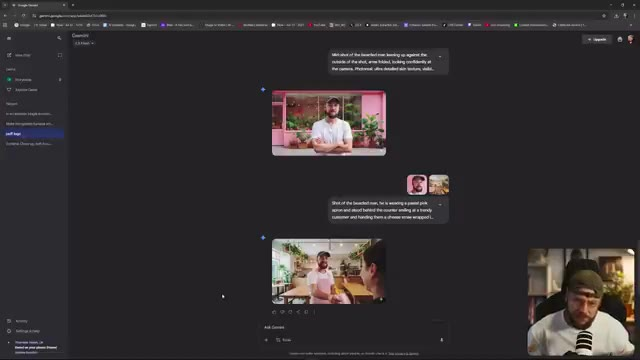
🔍 Agrandiret je vais simplement faire défiler vers le haut ici. Vous remarquerez peut-être que certaines de ces images proviennent de la dernière vidéo que j'ai faite concernant la publicité par IA. Et la raison pour laquelle je veux vous montrer ceci, c'est que c'est en fait un très bon exemple en termes de problème de format d'image. L'une des très grandes fonctionnalités de Nano Banana est la possibilité de combiner plusieurs images. Et vous pouvez voir ici, c'est exactement ce que nous avons fait. Nous avons une génération 16/9 d'un homme tenant une tasse de café à emporter devant ma boutique. Je dis ma boutique, c'est en fait une fausse boutique que j'ai générée.
Interface & Outils : Interface de Google Gemini affichée dans un navigateur web, avec la webcam du créateur visible en incrustation (PiP) dans le coin inférieur droit.
Contenu textuel & Code : Prompts visibles dans l'interface : "Put the logo reading 'puff' on the top peer shop from outside the store, make it large and legible" et "Put the man in the green coat leaning on the outside of the shop instead of the man in the denim jacket." Un fichier image intitulé "gemini-1.5-flash-image-context-nano-banana_brow-for-a_take-up_2-0ft.jpg" est ouvert.
Action / Démonstration : Le créateur fait défiler une conversation sur l'interface de Google Gemini pour montrer des exemples d'images générées combinant plusieurs éléments, puis zoome sur une image spécifique montrant une main tenant un gobelet de café.
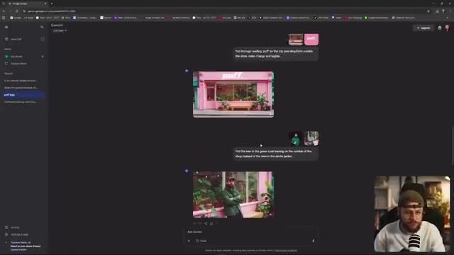
🔍 Agrandir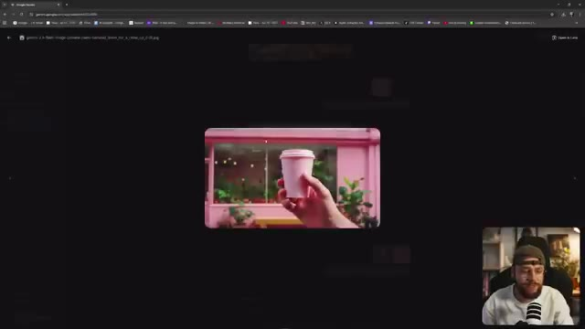
🔍 Agrandiravec Midjourney, mais pour continuer. J'ai demandé à Nano Banana de prendre ce logo et de l'incruster sur le gobelet de café. Et vous pouvez voir que ça fait un travail vraiment formidable. Cependant, le résultat qu'il me donne est au format carré un par un, exactement ce que je ne voulais pas parce que je savais que j'allais ensuite animer ceci et en faire une publicité. Alors pourquoi est-ce que cela m'est arrivé et pourquoi est-ce que cela continue de vous arriver ? Nano Banana prend le rapport hauteur/largeur de l'image que vous lui fournissez et il
Interface & Outils : Interface web de Google Gemini (anciennement Bard) avec affichage d'un panneau latéral à gauche, d'une zone de chat centrale et de vignettes d'images. Un encadré PiP en bas à droite montre le créateur face caméra.
Contenu textuel & Code : Texte du prompt visible dans l'interface : "Put the logo that reads 'puff.' on the coffee cup".
Action / Démonstration : Le créateur montre et commente les résultats d'image générés par l'IA dans l'interface de Google Gemini, en soulignant le problème du format carré (1x1).
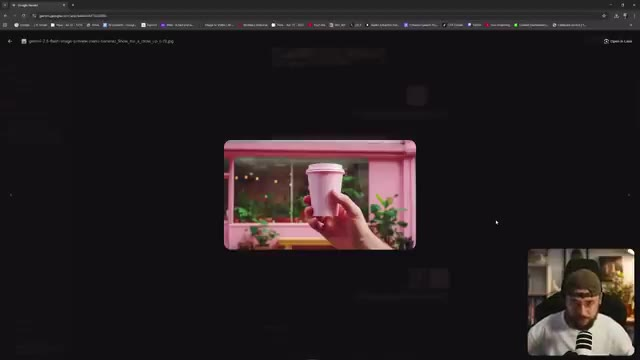
🔍 Agrandir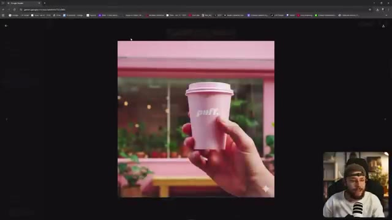
🔍 Agrandir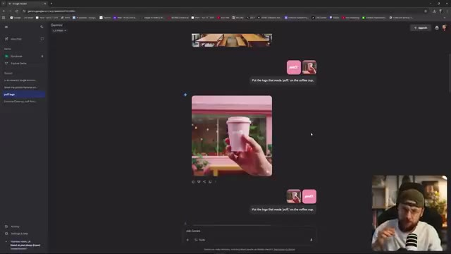
🔍 Agrandirpour correspondre à ce ratio d'aspect. Donc si vous mettez une image de un sur un, vous allez récupérer une image de un sur un en retour, même si vous dites à Nano Banana de me sortir un 16 par 9 dans votre prompt textuel. Il va simplement ignorer cela. Maintenant, évidemment, notre exemple ici est un peu plus compliqué parce que nous avons une image 16 par 9 et nous avons aussi une image de un sur un que nous combinons l'une avec l'autre. Donc dans ce cas, comment faire pour que Nano Banana nous donne notre sortie en 16 par 9 ? Tout est lié à
Interface & Outils : Interface web de Google Gemini avec affichage en médaillon (PiP) du créateur en bas à droite.
Contenu textuel & Code : Texte du prompt visible : 'Put the logo that reads 'puff.' on the coffee cup' et nom de fichier 'puff.png'. [SCENE] Le créateur montre l'interface de Gemini et illustre le problème des formats d'image combinés (1x1 et 16x9).
Action / Démonstration : Démonstration pédagogique et présentation du workflow.
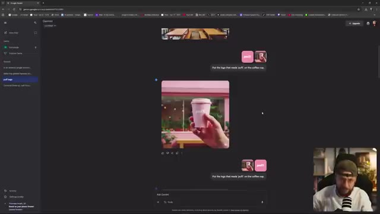
🔍 Agrandir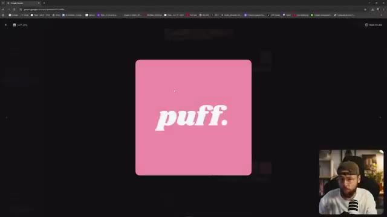
🔍 Agrandir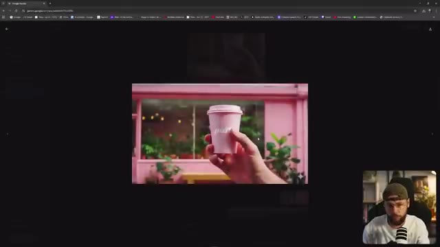
🔍 Agrandirl'ordre dans lequel vous téléchargez vos multiples images. Vous voulez vous assurer que l'image qui va servir de guide pour le ratio d'aspect est la dernière que vous entrez dans Gemini. Donc par exemple, vous téléchargeriez votre logo 1x1 d'abord, vous téléchargeriez ensuite votre image 16x9 et cela garantira qu'après votre prompt textuel, Gemini va également produire un 16x9. Donc dans ce cas, évidemment, cela n'a pas fonctionné à cause de l'ordre des images que j'ai téléchargées. Mais ensuite, vous pouvez voir juste en dessous que j'ai utilisé exactement le même
Interface & Outils : Google Gemini (navigateur web), avec le créateur en incrustation vidéo (PiP) en bas à droite.
Contenu textuel & Code : Le prompt textuel visible dans l'interface indique : "Put the logo that reads 'puff' on the coffee cup", ainsi que deux petites images miniatures représentant le logo et la tasse de café. L'image générée au centre montre une main tenant un gobelet de café rose devant une vitrine de magasin.
Action / Démonstration : Le créateur montre l'interface de Gemini avec ses prompts et les résultats d'images générées, tout en expliquant l'importance de l'ordre de chargement des images pour définir le format de sortie.
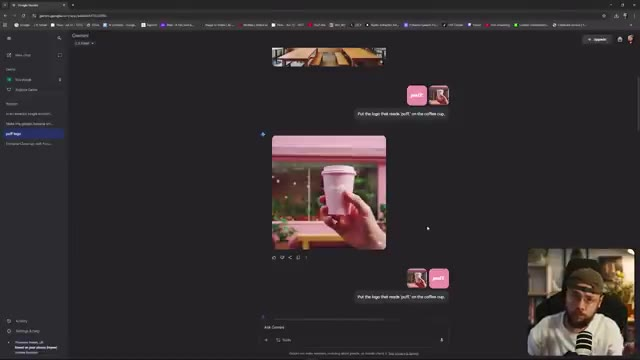
🔍 Agrandirinvite textuelle. Je ne mentionne pas du tout les ratios d'image. La seule chose que j'ai faite différemment, c'est que j'ai téléchargé mon logo 1x1 en premier, puis j'ai téléchargé mon image 16x9 et, comme par magie, j'ai récupéré ma génération au bon ratio d'image. Maintenant, Google a ouvertement admis que Nano Banana est toujours en version bêta, donc parfois il ne respecte pas les ratios d'image comme il le devrait. Personnellement, quand j'ai commencé à utiliser cette petite astuce de contournement, ou peu importe comment vous voulez l'appeler, je n'ai jamais eu le moindre problème de suivi.
Interface & Outils : Interface web de Gemini (Google) avec un panneau latéral de navigation à gauche, un flux de discussion central et une incrustation vidéo du présentateur en bas à droite.
Contenu textuel & Code : Texte de prompt visible « Put the logo that reads 'puff' on the coffee cup » avec deux fichiers d'images joints (le logo et l'image principale).
Action / Démonstration : Le créateur montre l'interface de l'outil de génération d'images et défile à l'écran pour illustrer le résultat de l'importation de ses fichiers au bon ratio.
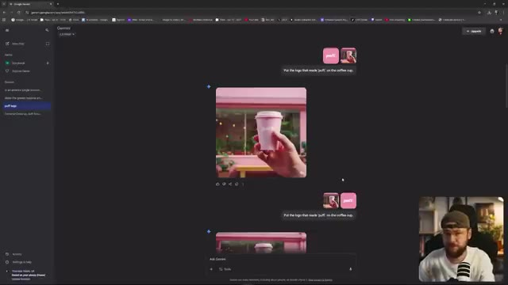
🔍 Agrandir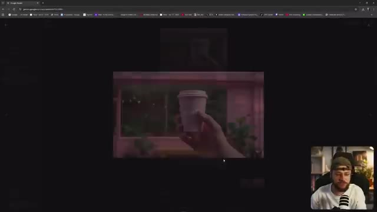
🔍 Agrandir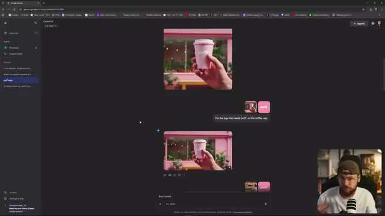
🔍 Agrandirça et si je fais défiler un peu plus vers le bas, vous pouvez voir un autre super exemple, on a exactement le même ordre en termes de logo téléchargé sur Gemini en premier, puis une image 16 par 9, une autre légèrement différente ici. Un prompt textuel très similaire. Mets le logo avec l'inscription puff sur le dos du t-shirt de la femme. Rends-le grand et lisible. Et comme je l'ai mis dans le bon ordre, on récupère notre sortie en 16 par 9. Si je les avais mis dans l'autre sens, j'aurais récupéré ceci en un par un. Et encore une fois, vous pouvez voir où j'ai réellement mis le logo sur la boutique elle-même. Notre astuce a fonctionné une fois
Interface & Outils : Interface web de Google Gemini affichée en plein écran avec la webcam du créateur incrustée en bas à droite (PiP).
Contenu textuel & Code : Prompts textuels visibles : "Put the logo that reads 'puff' on the coffee cup." et "Put the logo that reads 'puff' on the back of the women's t-shirt, make it large and readable." avec des images de prévisualisation téléchargées.
Action / Démonstration : Le présentateur commente et montre à l'écran les exemples de prompts et de résultats générés par Gemini, en expliquant l'importance de l'ordre des éléments importés.
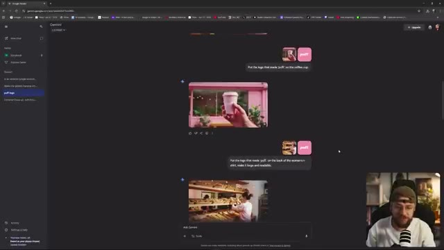
🔍 Agrandir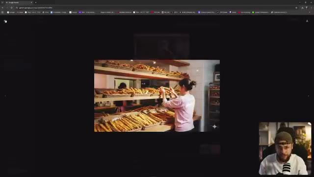
🔍 AgrandirEncore une fois, vous pouvez voir plusieurs fois que cette astuce fonctionne, donc si vous rencontrez des problèmes, les gars, commencez à l'utiliser. La prochaine chose dont je veux parler est la façon dont vous pouvez réellement accéder à Nano Banana gratuitement et, à mon avis, c'est la meilleure façon d'utiliser l'outil. Maintenant, bien sûr, de nombreuses plateformes payantes comme FreePick et Higgsfield ont intégré Nano Banana dans leur ensemble d'outils, mais vous allez devoir payer un abonnement pour leur service complet afin d'accéder à Nano Banana. Grâce à LM Arena
Interface & Outils : Interface de Google Gemini et LMSYS LM Arena avec les chats de génération d'images, le tout avec le créateur en incrustation vidéo (PiP) dans le coin inférieur droit.
Contenu textuel & Code : Prompts textuels visibles dans le chat comme "Put the logo that reads 'puff' on the back of the woman's t-shirt..." et le modèle "imagen-3.0-flash-image-preview (nano-banana)" sur LM Arena.
Action / Démonstration : Le créateur navigue et démontre l'utilisation de l'outil Nano Banana à travers différentes interfaces de génération d'images, tout en s'exprimant face caméra dans le coin de l'écran.
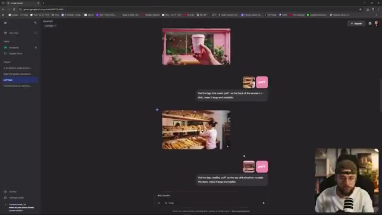
🔍 Agrandir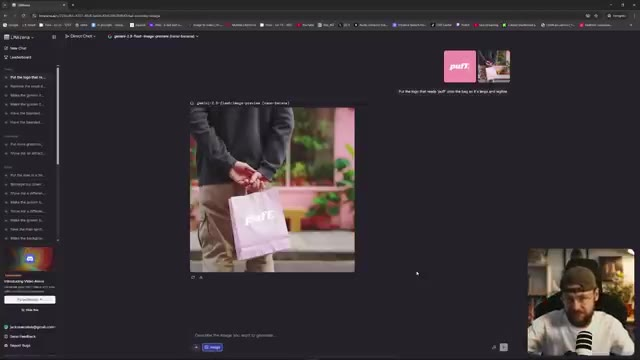
🔍 AgrandirCependant, vous pouvez utiliser l'outil et toutes ses fonctionnalités, et le point positif est que vous n'allez pas vous retrouver avec ce filigrane Gemini dans le coin inférieur droit. Vous pouvez même télécharger, comme vous pouvez le voir ici, plusieurs images pour les combiner. J'ai téléchargé un format 16x9 de ce sac en papier, puis un logo un par un, et j'ai dit : "mets le logo avec l'inscription puff sur le sac pour qu'il soit grand et lisible", et voilà, exactement ce que nous avons demandé sans dépenser un seul centime et sans avoir ce fichu
Interface & Outils : Interface web de Llama.ai avec barre latérale à gauche, zone de chat central affichant l'image générée et les miniatures des images sources uploadées en haut à droite. Le créateur apparaît en incrustation (PiP) dans le coin inférieur droit.
Contenu textuel & Code : Texte du prompt visible : "Put the logo that reads 'puff' onto the bag so it's large and legible". Modèle mentionné dans l'interface : `gemini-2.5-flash-image-preview`. Miniatures de deux images sources uploadées (le sac 16x9 et le logo).
Action / Démonstration : Le créateur montre le résultat de la combinaison de plusieurs images et l'application d'un prompt pour incruster un logo sur un sac en papier sans filigrane.
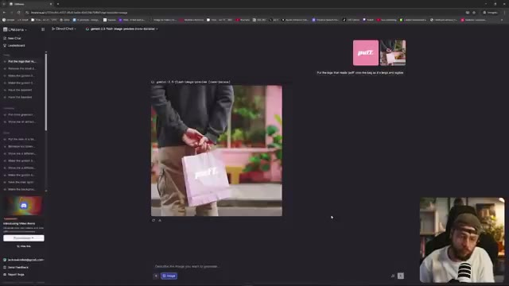
🔍 Agrandir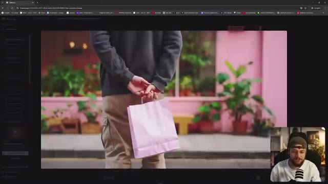
🔍 Agrandir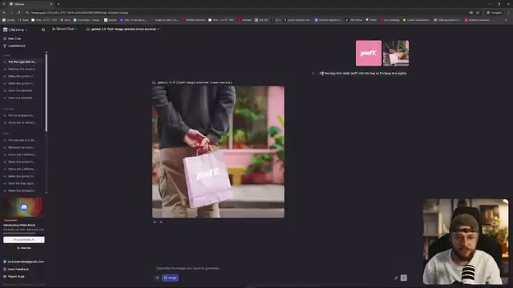
🔍 Agrandir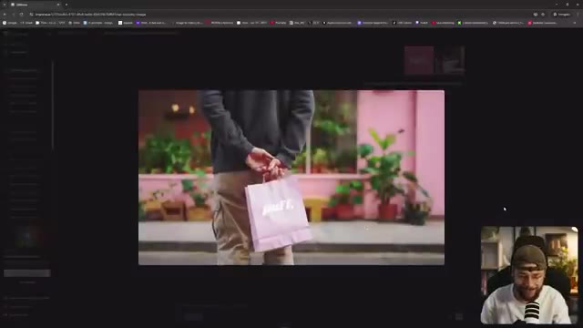
🔍 AgrandirFiligrane Gemini dans le coin inférieur droit. Alors, comment accédons-nous à LMArena ? C'est en fait vraiment très simple, vous voulez juste taper dans votre navigateur web lmarena.ai. Lorsque vous vous connectez pour la première fois à l'outil, il va ressembler exactement à ceci, donc vous voulez aller dans le coin supérieur gauche et sélectionner "Direct Chat" dans ce petit menu déroulant. Vous voulez ensuite descendre ici là où vous entreriez votre invite textuelle et vous assurer de sélectionner "Generate Images". Et vous remarquerez maintenant que par défaut Gemini 2.5 flash image preview a été sélectionné, autrement connu sous le nom de Nano Banana. Je vois un
Interface & Outils : Interface web de LMArena (lmarena.ai) sur navigateur avec affichage des chats et options de génération d'images, incluant une vue en incrustation (PiP) du présentateur Jack.
Contenu textuel & Code : URL "lmarena.ai", texte "Find the best AI for you", barre de saisie de prompt "Ask anything...", divers onglets et menus latéraux ("New Chat", "Leaderboard").
Action / Démonstration : Navigation sur le site LMArena pour expliquer comment accéder aux fonctionnalités de chat direct et de génération d'images.
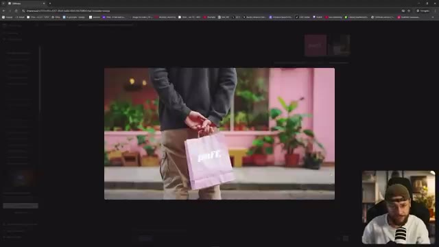
🔍 Agrandirbeaucoup de gens dans mes commentaires disent qu'ils ne peuvent pas accéder à Nano Banana via Ella Marina. Je n'ai jamais eu de problèmes et j'utilise cet outil chaque jour. Maintenant, juste pour vous montrer les gars, bien sûr vous pouvez aussi accéder à Nano Banana via Gemini lui-même. C'est à la fois sur votre application mobile ainsi que via un navigateur web. Vous pouvez voir ici que nous avons quelques exemples de combinaison de différentes images au sein de Gemini lui-même, mais nous obtenons toujours le filigrane dans le coin inférieur droit. Je sais que ce n'est pas un gros problème de l'enlever. Vous pourriez facilement utiliser quelque chose comme
Interface & Outils : Navigateur web affichant l'interface de LMSYS Arena (LMArena) avec le modèle Gemini 2.5-flash-image-preview, ainsi que Google Gemini dans la seconde image. Le créateur apparaît en incrustation (PiP) dans le coin inférieur droit.
Contenu textuel & Code : Texte « Find the best AI for you », barre de prompt avec le bouton « Image », sélection du modèle « gemini-2.5-flash-image-preview (non-demo) », et une image générée montrant une boutique rose avec l'enseigne « puff. ».
Action / Démonstration : Le créateur navigue sur le web pour montrer l'interface de LMArena et l'utilisation de Gemini pour combiner des images, tout en commentant le filigrane visible en bas à droite.
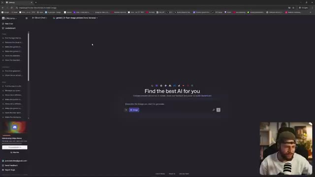
🔍 Agrandir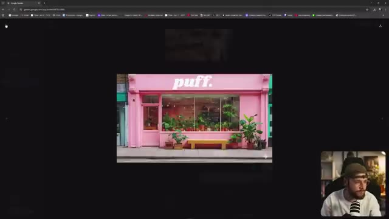
🔍 AgrandirRemplissage génératif Photoshop et il y a probablement tout un tas d'autres outils de nettoyage par IA que vous pourriez utiliser. Mais vous savez, si vous vous intéressez à la création de films par IA, c'est un processus assez long. Ça peut prendre beaucoup de temps pour obtenir les résultats que vous voulez. Donc ajouter une étape supplémentaire consistant à devoir enlever un logo tout le temps, c'est juste un peu pénible dont on pourrait bien se passer. Avant de passer à ce troisième et dernier conseil, les gars, celui dont personne ne parle vraiment, je tiens à remercier Submagic d'avoir sponsorisé la vidéo d'aujourd'hui. C'est un outil conçu pour vous aider à faire des shorts dynamiques
Interface & Outils : Google Gemini et le site web de Submagic (submagic.co) affichés en partage d'écran, avec le créateur visible en incrustation (PiP) dans le coin inférieur droit.
Contenu textuel & Code : Sur Gemini : "Put the logo reading 'puff' on the top pink shopfront outside the store, make it large and legible.", "Put the man in the green coat leaning on the outside of the shop instead of the man in the denim jacket." Sur Submagic : "Create viral shorts in seconds with AI", notes Google 4.9, Trustpilot 4.8.
Action / Démonstration : Le créateur navigue à l'écran entre Google Gemini et le site de Submagic tout en commentant le processus de création vidéo par IA et en présentant le sponsor.
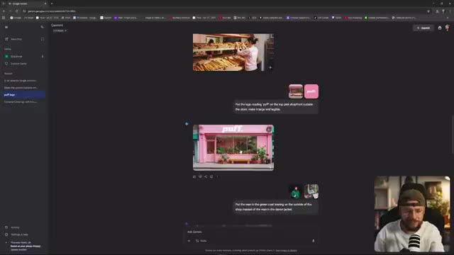
🔍 Agrandir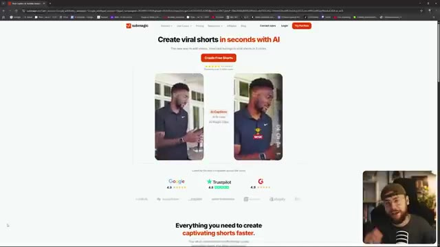
🔍 Agrandirformez du contenu en quelques clics seulement. Vous pouvez donc aller de l'avant et importer votre vidéo. Et si nous cliquons sur générer les sous-titres, Submagic va automatiquement faire exactement ce qui est écrit sur la boîte. Vous pouvez donc voir ici que nous avons un large éventail de sous-titres parmi lesquels choisir, qui sont basés sur certains des créateurs les plus populaires de la planète. Et si nous remontons tout en haut ici, vous pouvez également voir une option pour le b-roll.
Interface & Outils : Interface web de l'outil Submagic (submagic.co) avec vue PiP (Picture-in-Picture) de Jack en bas à droite.
Contenu textuel & Code : Textes visibles : « Create viral shorts in seconds with AI », « Create Free Shorts », « Language: US English », « Choose Style » avec de nombreux préréglages de styles de sous-titres (Hormozi, Alex, etc.).
Action / Démonstration : Le créateur montre la plateforme Submagic, l'importation de vidéo et la sélection de styles de sous-titres dynamiques.
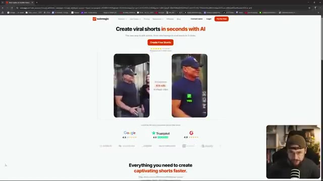
🔍 Agrandir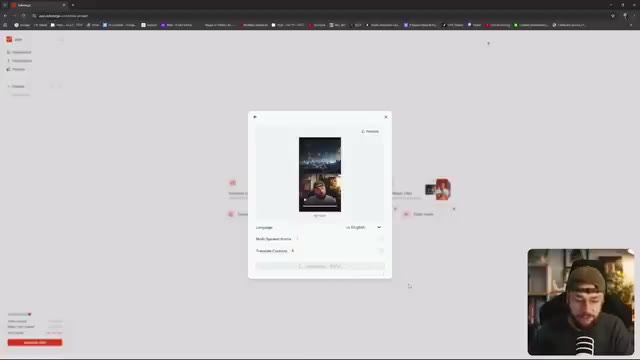
🔍 Agrandir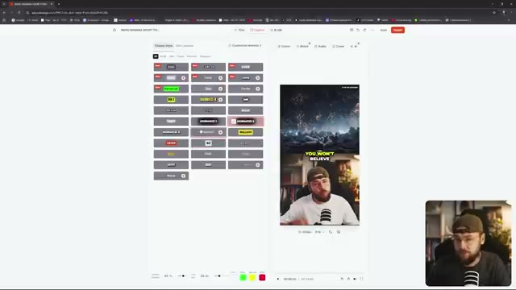
🔍 AgrandirEt nous pouvons emprunter la voie des b-rolls magiques où Submagic sélectionnera des clips qui correspondent au contenu de ce que nous disons. Ou si vous voulez être vraiment précis, nous pouvons cliquer ici, ajouter un B-roll, et nous pouvons sauter dans la bibliothèque de stocks de Submagic. Nous pouvons même aller de l'avant et définir la transition. Ainsi, lorsque nous passons de ce que nous avons filmé au B-roll fourni par Submagic, nous pouvons vraiment définir ce mouvement. Donc l'idée de Submagic, c'est que ce n'est pas seulement une question de gain de temps.
Interface & Outils : Submagic (application web d'édition vidéo par IA)
Contenu textuel & Code : Interface d'édition avec le texte du script segmenté à gauche (incluant les options "Magic B-roll" et "Magic Zoom"), un aperçu de la vidéo verticale avec sous-titres animés au centre, et une vue incrustée (PiP) du créateur en bas à droite.
Action / Démonstration : Le créateur présente l'interface de Submagic en montrant les différentes options de b-rolls magiques et de gestion des segments vidéo.
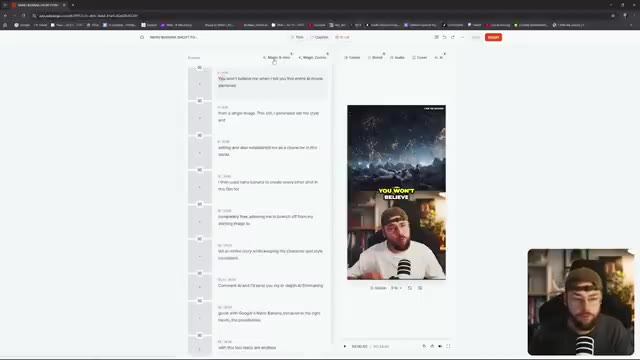
🔍 AgrandirIl est également conçu pour rendre votre contenu beaucoup plus captivant. Si vous souhaitez découvrir cet outil, assurez-vous de cliquer sur le lien ci-dessous dans la description et d'entrer également le code jack10 lors du passage à la caisse pour obtenir 10 % de réduction sur votre achat. Merci beaucoup d'être arrivés jusqu'ici dans la vidéo les gars. Maintenant, je veux plonger dans cette petite astuce secrète pour vous tous. Vous pouvez voir que j'ai eu des échecs de génération récurrents ici en essayant d'utiliser Nano Banana dans LM Arena. Je suis sûr que vous l'avez constaté vous-même aussi, parfois vous ne pouvez tout simplement pas amener cet outil d'IA à faire ce que vous cherchez.
Interface & Outils : Navigateur web affichant une interface d'édition vidéo (Image 1) puis l'interface de LM Arena (Image 2) avec un retour vidéo du créateur en incrustation (PiP) dans le coin inférieur droit.
Contenu textuel & Code : Textes de l'interface de montage et chronologie sur l'image 1. Sur l'image 2, les invites de génération et les messages d'erreur en rouge associés au modèle gemini-2.0-flash-image-preview (nano-banana) dans LM Arena.
Action / Démonstration : Le créateur présente l'interface de montage de son contenu vidéo, puis bascule sur l'interface de LM Arena pour montrer des exemples de générations échouées avec l'outil Nano Banana.
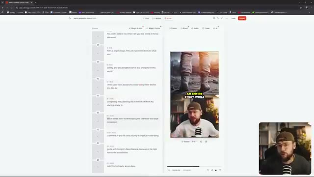
🔍 Agrandir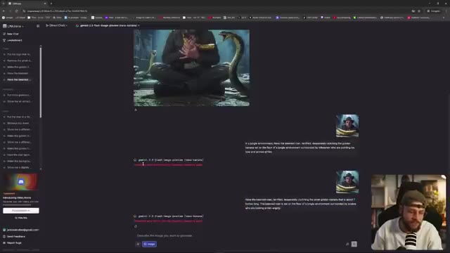
🔍 AgrandirEt vous allez probablement penser que je dis juste ça pour plaisanter, mais ne sous-estimez pas le pouvoir de démarrer une nouvelle conversation. Que vous utilisiez Nano Banana via LM Arena ou Gemini lui-même, parfois je pense qu'il faut lui donner une ardoise blanche. Si vous n'arrivez tout simplement pas à obtenir de Nano Banana les résultats que vous recherchez, j'ai l'impression qu'il utilise la mémoire de la conversation en cours.
Interface & Outils : LM Arena (navigateur web) avec le panneau latéral de l'historique des chats et la zone de discussion centrale montrant des images générées et des prompts textuels. Le créateur apparaît dans un encadré vidéo PiP en bas à droite.
Contenu textuel & Code : Modèle affiché : "gemini-2.0-flash-image-preview (nano-banana)". Prompts textuels visibles dans le fil de discussion décrivant un homme barbu terrifié avec des serpents et une banane dorée. Historique des chats dans la barre latérale gauche.
Action / Démonstration : Le créateur montre l'interface de LM Arena et commente l'utilisation des chats de discussion pour générer des images avec Nano Banana.
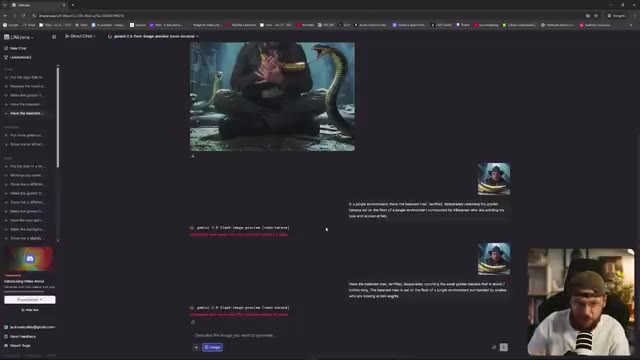
🔍 AgrandirMaintenant, je ne peux pas confirmer cela et il y a un débat entre les créateurs de contenu IA pour savoir si c'est réellement le cas. Tout ce que je sais, c'est que d'après ma propre expérience, j'ai vraiment eu du mal à obtenir les bons résultats avec cet outil, mais parfois, en appliquant le même prompt textuel dans un tout nouveau chat, boum.
Interface & Outils : Navigateur web affichant l'interface de l'application LMSYS (lmarena.ai) avec un panneau de navigation latéral et une zone centrale de saisie de prompt, incluant un retour vidéo du créateur en incrustation (PiP).
Contenu textuel & Code : Texte affiché : "Find the best AI for you", champ de saisie avec le bouton "Image", et des résultats générés montrant un homme barbu avec une casquette et un tablier rose écrivant dans un cahier.
Action / Démonstration : Le navigateur présente l'outil de génération d'IA avec ses options de prompt et les images générées précédemment affichées dans l'historique du chat, tandis que le créateur commente l'expérience en bas à droite.
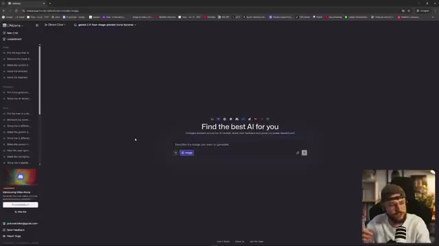
🔍 Agrandir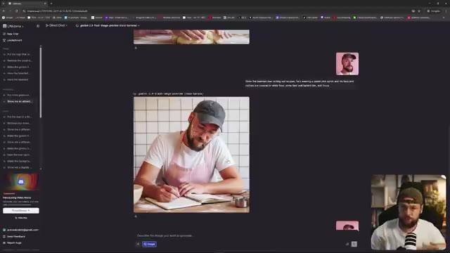
🔍 AgrandirÇa fonctionne comme par magie. Maintenant, accordé, ça pourrait être juste de la chance, mais pour moi personnellement, ça a fonctionné tout simplement trop de fois pour qu'il n'y ait pas quelque chose là-dessous. Je pense que lorsque vous créez plusieurs images dans le même chat en parlant à Nale Banana, cela a une sorte de mémoire et fait référence à ses générations précédentes qui sont réinjectées dans tout ce que vous demandez de nouveau à l'outil.
Interface & Outils : Interface web de LMArena (ou outil similaire de chat avec IA) avec un panneau latéral à gauche, une zone de discussion centrale affichant des images générées et le flux vidéo du créateur en incrustation (Picture-in-Picture) en bas à droite.
Contenu textuel & Code : Historique de discussion affichant plusieurs générations d'images successives représentant un homme barbu dans différents contextes (en train d'écrire dans un carnet avec un tablier rose, gros plans, etc.) et des prompts textuels associés.
Action / Démonstration : Le navigateur web présente l'interface de discussion par chat où l'utilisateur fait défiler ou visualise les différentes images générées précédemment qui conservent la même cohérence visuelle.
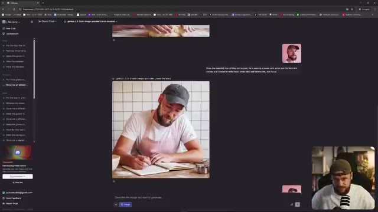
🔍 AgrandirDonc si vous galérez vraiment vraiment, que vous vous arrachez les cheveux, vous savez, cet outil est vraiment bien mais vous n'arrivez pas à obtenir ce que vous voulez, essayez un nouveau chat. Et si cette petite astuce secrète vous aide, assurez-vous de laisser un commentaire en bas et de me le faire savoir pour que je sois rassuré de ne pas juste imaginer tout ça les gars. Merci beaucoup d'avoir regardé la vidéo d'aujourd'hui, si vous l'avez appréciée, n'oubliez pas de mettre un gros pouce bleu, pensez à vous abonner et bien sûr à activer la cloche de notification pour ne manquer aucun contenu à venir comme je l'ai mentionné au début de
Interface & Outils : Interface web de LMArena (LMarena.ai) affichant un fil de discussion (Chat) avec des interactions textuelles et des générations d'images. En bas à droite, la caméra de Jack est intégrée en mode Picture-in-Picture.
Contenu textuel & Code : On aperçoit des prompts textuels décrivant des scènes (comme un homme tatoué écrivant des recettes avec un tablier rose) et des images générées associées, ainsi que l'historique des chats dans le panneau de gauche.
Action / Démonstration : Le navigateur web montre l'interface de l'outil d'IA en arrière-plan, tandis que Jack apparaît en bas à droite en train de parler et d'animer sa conclusion.
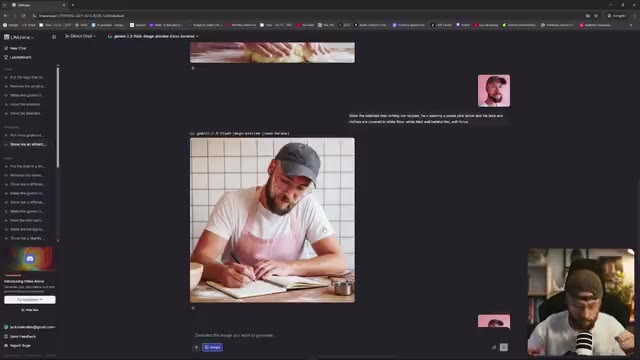
🔍 Agrandirvidéo nous avons également lancé les abonnements pour la chaîne c'est un excellent moyen de me soutenir si vous appréciez vraiment ce que nous faisons ici sur la chaîne le niveau le plus bas est à seulement deux livres par mois donc ce n'est pas grand-chose mais cela vous donne accès à notre discord privé une communauté incroyable en pleine croissance où nous parlons de tout ce qui touche à l'IA créative où nous partageons des idées et nous passons tout un tas de trucs et astuces différents cela va être une source de connaissances vraiment formidable pour vous les gars. Toutes sortes d'autres avantages également en matière d'abonnements, en particulier
Interface & Outils : Interface web de LMarena (LMSYS Chatbot Arena) montrant un fil de discussion avec génération d'images (gemini-2.5-flash-image-preview) et une vignette vidéo incrustée (PiP) du créateur.
Contenu textuel & Code : Modèle de génération affiché : gemini-2.5-flash-image-preview, avec des images générées représentant un homme barbu cuisinant et écrivant dans un carnet.
Action / Démonstration : Navigation sur l'interface web de test de modèles d'IA, montrant des résultats de génération d'images et de prompts.
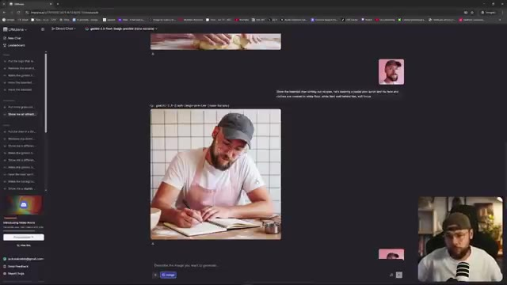
🔍 Agrandirle niveau légèrement plus cher. N'hésitez pas à poser vos questions sur Nano Banana dans les commentaires ci-dessous et je vous retrouve dans la prochaine vidéo.
Interface & Outils : Interface web sombre avec un panneau latéral de chat à gauche, une zone de discussion centrale montrant des images générées et des prompts, et un encadré PiP vidéo du créateur en bas à droite.
Contenu textuel & Code : On aperçoit des prompts textuels dans l'interface (ex: "Show me an attract...", "Do the hairtrim..."), des images générées montrant Jack en train d'écrire ou de cuisiner, et le modèle sélectionné indiqué comme "gemini-2.5-flash-image-preview (nano-banana)".
Action / Démonstration : Le créateur montre l'interface de l'outil d'IA avec des exemples de générations basées sur le modèle Nano Banana tout en s'exprimant face caméra dans l'encadré PiP.
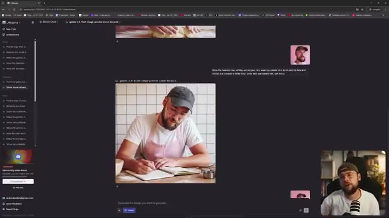
🔍 Agrandir